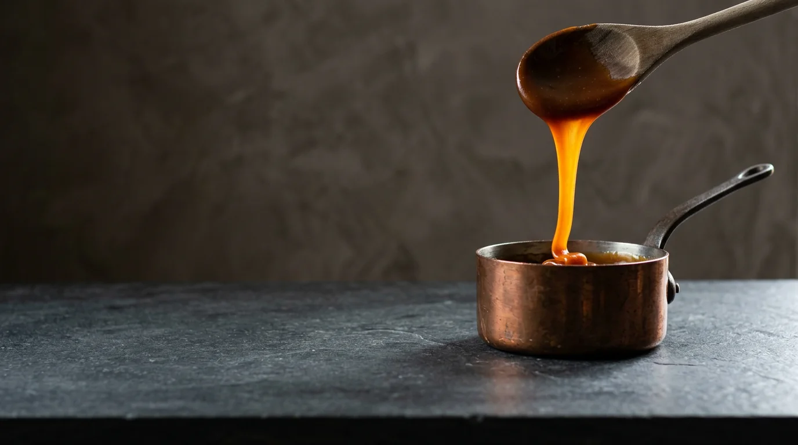
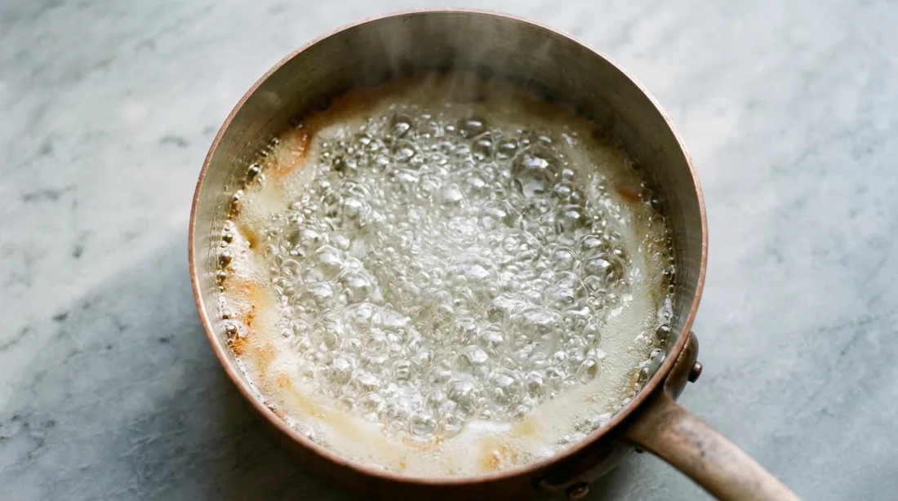
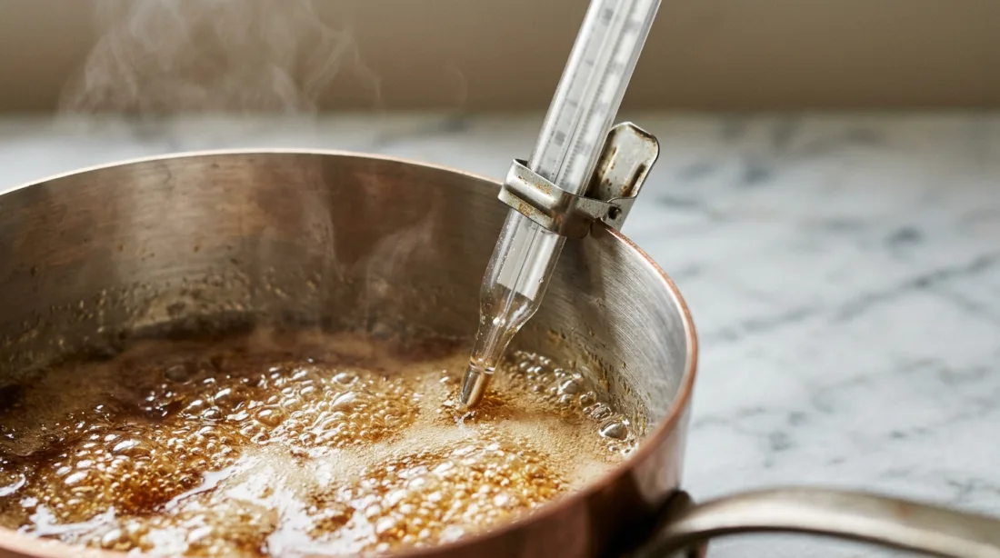
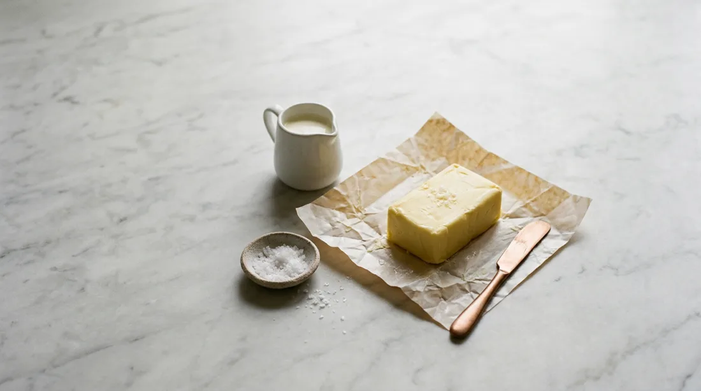
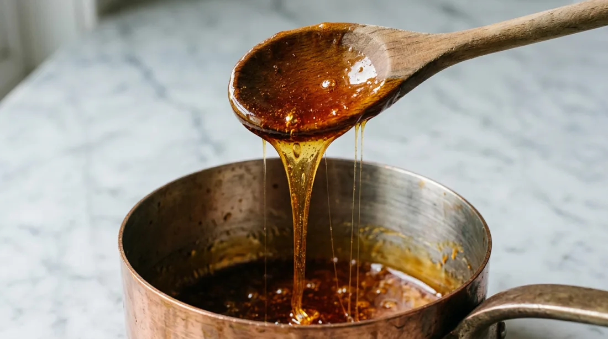
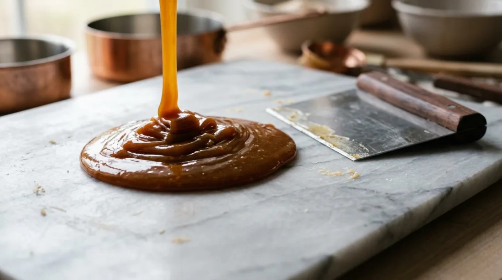
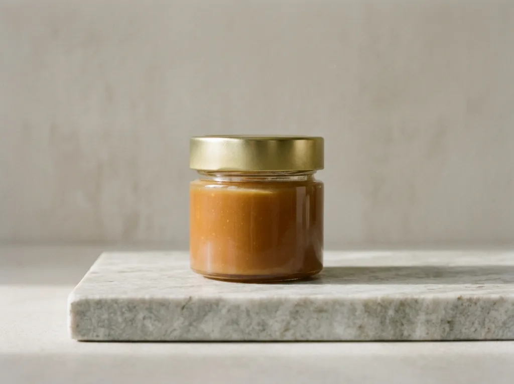
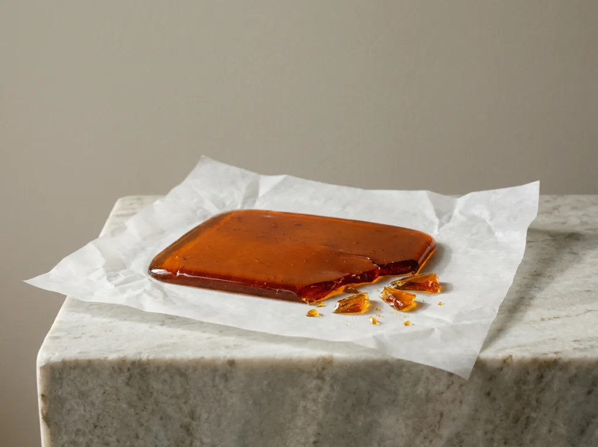

Gooey Sticky Menu

Caramel is sugar and patience. It melts clear, turns the colour of straw, then amber, and at every degree it is a different thing: a syrup that pours, a thread that pulls, a sheet that snaps. We stop ours just before it burns, then stir in cream and salted butter, and nothing else.
- Sugar
- Raw cane, and nothing added
- Butter
- Salted, with fleur de sel
- Batch
- One copper pot, 4 kg
Boil
Sugar, water and heat


Pull
When it holds a thread- Colour
- Clear, then straw, then deep amber
- Texture
- Runs like syrup when hot, pulls into threads as it cools
- Smell
- Toast and butter, a little smoke at the end


Shop
Sent the day after it’s cooked
€14

€12